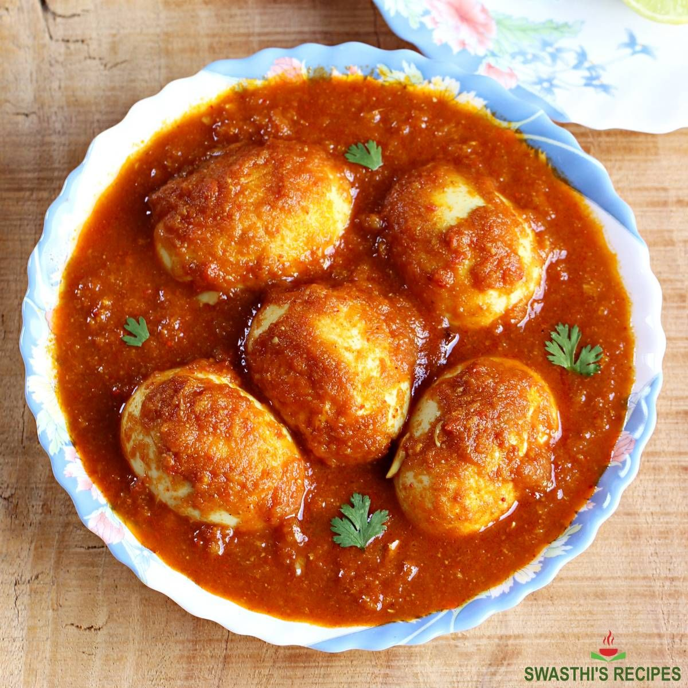

Punjabi Egg Curry

- Meal
- Dinner
- Serves
- 6
- Protein
- egg — vegetarian
- Cook
- stovetop · 30 min active / 40 min total · easy
- Make-ahead / leftovers
- yes (boil eggs and make the gravy ahead) / yes
- Mediterranean
- yes
- WW tier
- light
- Status
- Trying out (probation)
Swasthi's (Indian Healthy Recipes) dhaba-style egg curry: hard-boiled eggs pan-fried until golden and blistered, then simmered in a spiced onion-tomato gravy with ginger, garlic, garam masala, and a splash of cream. North Indian roadside comfort, and the cheapest protein in the deck.
Ingredients
- 12 hard-boiled eggs, peeled
- 4 Tbsp oil + 2 tsp butter or ghee
- 1 bay leaf
- 1/4 tsp ground cinnamon (replaces the cinnamon stick + cardamom pods)
- 2 1/2 cups finely chopped onion (~3 medium)
- 2 tsp minced ginger + garlic (jar is fine)
- 2 cups finely chopped tomatoes (or one 15 oz can diced, blitzed)
- 3/4 tsp paprika + pinch cayenne (replaces red chili powder; skip cayenne for kids)
- 1–1 1/2 tsp garam masala
- 1 1/2 tsp ground coriander
- 1/4 tsp turmeric
- 1 tsp salt, adjust to taste
- 2–2 1/2 cups water
- 1 tsp sugar (optional)
- 1/2 cup heavy cream (optional)
- 2 Tbsp chopped cilantro
- To serve: brown basmati rice (house rule), naan
Method
- Pat the peeled eggs dry and prick each 2–3 times with a fork (stops them splattering).
- Heat the butter in a nonstick pan and fry the eggs, rolling them, until golden and blistered. Set aside.
- Heat the oil in a large pan with the bay leaf and cinnamon. When it sizzles, add the onions and sauté until golden, 8–10 minutes.
- Add the ginger-garlic; sauté 1 minute. Add the tomatoes and cook until mushy.
- Add the paprika, cayenne, garam masala, coriander, turmeric, and salt; sauté until fragrant and the paste pulls away from the pan.
- Pour in the water, stir, cover, and simmer until thickened with traces of oil on top, ~8–10 minutes.
- Taste; add salt or sugar. Add the eggs and simmer a few minutes. Stir in the cream if using (cook 2–3 minutes covered). Sprinkle cilantro.
- Serve over brown basmati or with naan.
Notes
- Scaled for 6: Swasthi's version is 4–5 eggs / "serves 5" (side-dish portions). Gravy doubled and eggs set at 12 (2 each) so it's a full dinner.
- One-offs dropped: green cardamom pods, cinnamon stick, kasuri methi, and Kashmiri chili powder. Ground cinnamon + paprika cover it; methi is optional in her recipe. Green chili omitted for kids.
- Sam's 5-dozen egg flats make this extra cheap. Boil the eggs on Sunday.
- Not Curry Chicken / Turkey Keema Curry — eggs, onion-tomato gravy.
- Mediterranean ✓ (just): eggs in place of meat, onion/tomato, brown rice — 3 of 4 (neutral oil). light without the cream, moderate with.